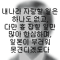
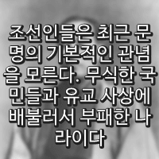

시작부터 추했던 게 맞음. 신라 시대 사람이 타임슬립해서 조선 건국 때 떨어져도 고려시대 사람이랑 똑같이 저건 정통성도 없고 경제도 너무 후졌다라고 생각했을 것.
↳ 답글 · ㅇㅇ · 11.09 16:32:34
근데 완전 막판도 아님 ㅋㅋㅋ 사실 정조말기때부터 나타났음 ㅋㅋㅋㅋㅋ 역사학자들이 제대로 안다룸 ㅋㅋㅋ 그러니가 ㅅㅂ 병신같이 철인왕후같이 세도정치 은근히 미화하는 드라마 나옴 ㅋㅋㅋㅋㅋ 애미디진 딴따라들
↳ 답글 · ㅇㅇ · 11.09 16:38:51
조선 500년동안 korea라는 명칭을 못바꾼거부터가 이미 병신국가라는 가벼운 증명인
↳ 답글 · ㅇㅇ · 11.09 18:07:59
@ㅇㅇ(223.38) 그럼 짱깨왕조는 진나라말고 다 병신들이었노? 그냥 서양 메이저국가들에서 최초 인지한 시점으로 명칭 고정된거지, 국가의 급이랑은 좆도 상관없는 소리임. 지금 대한민국이 고려따위보다 못해서 코리아라는 이름 못벗어나고있겠노
↳ 답글 · ㅇㅇ · 11.09 19:31:21
원래 망할때는 다 추함
ㅇㅇ · 11.09 16:30:51
한국 여성분들은 대한제국 남아 있었으면 좋겠다고 하면서 로판 쓰심
↳ 답글 · ㅇㅇ · 11.09 16:55:33
ㅇㅇ · 11.09 16:31:13
그저 자신의 추한 권력을 위해 조선 역사상 마지막 힘을 쥐어짜낸 개혁의 모든 빛을 무로 돌린 미친짓을 일삼은 이딴 쓰레기 왕에겐 일말의 자비심 조차 사치임 이마치 매국노와 동급의 취급을 해야 걸맞음 - dc App
↳ 답글 · ㅇㅇ · 11.09 16:34:31
조선은 진짜 지금까지 파헤친것보다 더 많은 사학자들의 새로운 시선으로 오히려 강도높은 역사 파헤치기 해야함 ㅋㅋㅋㅋㅋㅋ
진짜 덮어둔거 더 많을걸???
조선의 역사를 미화해서 나온게 오히려 일제강점기까지 더러운 한국인의 나태한 습관임
ㅇㅇ · 11.09 16:35:41
김일성은 지가 김씨 왕가가 되버린 ㅋㅋ
ㅇㅇ · 11.09 16:38:22
동북항일연군같은 개좆빠는 소리한다
공산당 팔로군이지
걍 팔로군이 이름을 동북항일연군이라고 갖다붙이고 활동한거야
좆라도 광주 조폭들이 이름을 '민주파'라고 붙이고 돌아다니는 것 처럼 말야
o o · 11.09 16:43:25
보도 연맹 사건으로 무고한 사람을 학살한 개승만이 왕 양반 타령 하면서 자본가에게 떼 돈 벌게 해줬네요.
ㅇㅇ · 11.09 16:45:02
이씨 왕조를 싫어하면서 이씨 왕조처럼 독재를 함.
↳ 답글 · ㅇㅇ · 11.09 16:45:37
이씨 왕조는 싫어하면서 이씨 왕조에서 만든 한글은 잘 씀.
ㅇㅇ · 11.09 16:45:07
조선 왕조 쳐빠는 노예민족ㅋㅋㅋ
↳ 답글 · o o · 11.09 16:50:54
노비 종모법으로 자식까지 노비로 만든 충녕대군을 세종대왕으로 부르고 화폐에 이씨 조선 인물로 도배한 한국 놈들이잖아.
ㅇㅇ · 11.09 16:46:50
이승만이야 실제로 조선시대에 태어나고 심지어 성인되서도 망하는거 하나하나 다 본 사람이라고 해도 김일성이는 일제시대도 한참 뒤에 태어난게 무슨 개씹소리고????ㅋㅋㅋㅋㅋㅋㅋㅋㅋㅋㅋㅋㅋㅋㅋㅋㅋㅋㅋㅋㅋㅋㅋㅋㅋㅋㅋ
ㅇㅇ · 11.09 16:47:33
김일성 그런 니가 왕조시절보다 더심한걸 만들었노
↳ 답글 · ㅇㅇ · 11.09 16:53:28
↳ 답글 · ㅇㅇ · 11.09 16:56:18
ㅇㅇ · 11.09 16:52:44
여기도 승만이 빠는애들 좀 잇지안냐
↳ 답글 · ㅇㅇ · 11.09 17:10:28
지금 인터넷에 널려있는 이승만 까는 모든 내용들 전부
빨갱이 새끼들이 모여 만든 단체 민족문제연구소 피셜 날조선동자료들임
이새끼들이 백년전쟁이라는 정치 포르노물 만들어서 빨갱이 양산시키고
이 똥을 황현필이 또 받아 처먹어서 영상화 시킴.
(황현필 : 625를 미국이 일으켰다 주장, 미군이 재미로 한국인 학살했다고 지껄인 인간쓰레기)
이게 빨갱이 새끼들 실체임
↳ 답글 · ㅇㅇ · 11.09 17:10:38
빨갱이를 전부 죽여야 하는 이유
이승만 관련 날조자료들 전부
빨갱이들이 모여만든 단체 민족문제연구소 or 황현필 영상에서 나온 자료들임
그라운드 C가 얘네들 개소리 싹다 반박했는데 재반박 안하고 도망침
심지어 좆무위키 황현필 항목에서도 그라운드 C한테 반박당했다는 내용 싹다 삭제당함
그거 보고 전향하는 사람들 늘어날까봐 ㅋㅋㅋㅋㅋㅋㅋㅋㅋㅋ
↳ 답글 · ㅇㅇ · 11.09 17:11:08
니가 지금 알고있는 이승만의 악행 어쩌고 '전부 다' 구라임
↳ 답글 · ㅇㅇ · 11.09 17:15:17
유영익이라는 국사편찬위원장이 있었음.
이승만이라면 자다가도 일어나서 쌍욕하던 사람이었다.
그런 직책에 있는 그 사람이 이승만을 더 갈구고 더 까기위해서
이승만에 대한 연구를 하다가 지금은 이승만의 열렬한 빠돌이가 되어 버렸다.
니가 유영익이라는 사람보다 이승만에 대해서 공부를 많이 했다면 내가 인정함.
그게 아니라면 존나 단편적인 지식만 가지고 이승만에 대해서
쓰레기같은 인식을 가지고 있는건 아닌지 다시 한번 생각해봐라.
분명히 병신짓도 많은데, 이새끼가 얻어낸 ‘한미동맹’이거 하나가 이나라 만들었다고 해도 과언이 아니라서
↳ 답글 · ㅇㅇ · 11.09 18:09:10
@ㅇㅇ 419 뭐? 419가 왜 구라야? 니가 하고 싶은 말은 '이승만은 부정선거 했다'는 거잖아? ㅋ
↳ 답글 · ㅇㅇ · 11.09 19:06:56
@ㅇㅇ(211.208) 419 그거? 부통령이 부정선거 한거를 당시 이미 당선된 이승만이 대통령된 책임을 지고 물러나겠다며 내려간거임.
그거를 빨갱이 새끼들이 세월이 흐르면서 은근슬쩍 이승만 본인이 했다고 날조함.
ㅇㅇ · 11.09 16:52:48
조선이 일제에 의해 완전히 지워지지 않고 온건히 근대화를 맞이했으면 지금 태국처럼 확실한 신분제도가 자리잡고 있었을거임 ㅇㅇ
↳ 답글 · ㅇㅇ · 11.09 16:56:26
온전히 근대화를 햇을지도 의문이고, 고종 민비때 농민수탈때메 민심최악이엿슴, 무너지는건 수순이엿고 누가 먹느냐엿지
↳ 답글 · ㅇㅇ · 11.09 18:23:43
정보) 일본은 지금도 왕이 있다
ㅇㅇ · 11.09 16:54:23
조선은 그냥 애미뒤진나라가 맞아 북한보다도 수준낮은국가다 정상적인 국가였으면 500년동안 짱깨후장빠는 외교만 처할게아니라 북벌시도를 하고 한반도에서 벗어날생각했겟지 아가리로만 고구려 후예라고 하지만 현실은 그냥 통일신라후손 외교자체도 친중하며 내부자위질만 하던것조차 그대로 신라따라간게 조선이란 국가
↳ 답글 · ㅇㅇ · 11.09 16:56:40
↳ 답글 · ㅇㅇ · 11.09 18:13:39
통일중국은 전근대 정주민족이 뭔개지랄염병을 떨어도 못이기고 결국 짓눌릴수밖에 없음. 너같은 새끼들이 존나 빨아제끼는 고려조차도 중국이 요&금/송으로 나눠져있던 상황에서 방어전 성공하고 줄타기로 꿀도 빨았던거지, 이게 원나라로 통합되자마자 한반도 역사상 가장 처참하게 강간당하고 나락갔다
↳ 답글 · ㅇㅇ · 11.09 18:15:35
@ㅇㅇ(112.153) 그냥 미국후장빠는 남한이 수준높은 국가인가, 미국 적대하는 북괴가 수준높은 국가인가만 따져봐도 간단하게 답 나옴. 자기가 누릴수 있는 최대 이익 누리는쪽이 수준높은거임
메시이재명맨유롯데 · 11.09 16:55:35
극우2찍들이 한심한 이유:극우새끼들 매일 쳐미는게 보수는 부자고 진보는 가난하다인데 이미 우리나라의 모든 설문조사 통계를 보면 평범한 삶도 못사는 ㅈ그지들이 보수 지지하고 자빠졌음 ㅋㅋㅋㅋㅋ 물론 최정상 강남3구사람들도 보수지지하긴함 근데 그 사람들은 결국 소수임 대부분의 그지새끼들이 보수 지지함 이새끼들이 결국 강남3구 사는 사람들 배불려주는데 그것도 모르고 보수보수 거림 대한민국은 현재 가난하면 2찍을하고 부유하면 1찍을 한다 2찍하는사람=걍 거르면된다 ㅇㅇ
↳ 답글 · ㅇㅇ · 11.09 17:11:36
민주당이 통치하는 한국 미래를 보려면
전라도, 서울 민주당 텃밭을 보면 된다
서울 집값 TOP7 -> 윤석열 투표율 최고로 높았던 곳
서울 집값 뒤에서 TOP7 -> 이재명 투표율 최고로 높았던 곳
재정자립은 좆도 안되면서 정부에서 돈만 타먹고 쓸데없는 사업만 벌리고 세금낭비하지
전라도의 모습이 민주당이 일처리하는 방식임 ㅋ
↳ 답글 · ㅇㅇ · 11.09 17:11:53
부자증세 : 부자를 더 부자로 만들어주고 서민을 영원히 서민으로 만드는 빨갱이들의 필살기
세계에서 삶의 질 제일 높은 스위스는
안 믿겨지겠지만 부자세율이 전 세계에서 제일 최하임
그러니까 스위스 부자들이 외국으로 탈출할 생각을 전혀 안 하고
자국에 계속 남아서 세금 내고 일자리 창출하니까
세계에서 가장 살기 좋은 나라가 된 거임
부자증세하면 서민들이 좋아지는게 아니라 서민들만 뒤짐 ㅇㅇ
↳ 답글 · ㅇㅇ · 11.09 17:12:08
부자들은 자산을 방어할 수 있는 수단과 정보, 그리고 자본력을 가지고 있다.
기업에 법인세를 과도하게 물리거나 다주택자에게 종부세를 폭탄으로 때리면,
그들은 손해를 보는 대신 제품 가격을 올리거나 전월세를 인상하여 세금 부담을 하부 구조로 넘겨버린다.
결국 표면적으로는 "부자 증세"가 되었지만 부자는 별 피해도 없고
실질적인 청구서는 물가 상승과 주거비 부담이라는 형태로 서민들에게 배달되는 역설이 발생한다.
빨갱이들이 아무리 아가리로만 약자를 위한다는 명분을 내세워도,
불공정한 원칙과, 시장의 공급과 수요 법칙을 무시한 정책은
결국 가장 취약한 계층에게 비용이 전가되는 비극을 낳는다.
↳ 답글 · ㅇㅇ · 11.09 17:12:11
(뉴스기사) 저소득층 자산, 박근혜때 69% 늘었는데 문재인때 1% 증가
박근혜때 소득수준 하위 20%의 재산증가율 → 69%
문재인때 소득수준 하위 20%의 재산증가율 → '단 1%' (연평균 물가상승률이 5% 이상이라 재산은 실질적으로 줄어듬)
우파 정부땐 다같이 잘살게 되는데 좌파 정부땐 거지들만 더 거지가 됨
이게 부자돈 뺏어서 서민들 나눠주겠다는 민주당의 실체임
부자 팬다고 꼴값 떨어봤자 돈 없는 하층민들만 더 죽어나는게 진실임
↳ 답글 · ㅇㅇ · 11.09 17:14:30
강남구 가져오면 지들도 할말 없으니까 강남구는 은근슬쩍 예외로 치는데
강남구 뿐만 아니라 그냥 서울 구 중에 집값 TOP7 전부 윤석열 투표율이 높았던 곳이고
최하위 7개는 전부 이재명 투표율이 높았던 곳임 ㅋㅋㅋ
↳ 답글 · ㅇㅇ · 11.09 19:18:57
실제론 거지새끼들이 배급사회 좋아하는 인생망한 뷔응신새끼들 대부분이 1찍을 한다는 통계가 있음 ㅇㅇ
ㅇㅇ · 11.09 17:00:35
이승만은 왕실을 혐오한 게 아니라 열등감을 느낀거임 ㅇㅇ 왜냐면 먼 방계에 잔반 출신이거든 근데 막상 유학 할 때는 자기를 조선의 왕자라고 소개 할 정도로 왕실에 소속감을 가지기도 했음.
ㄴㄷ · 11.09 17:13:50
적이든 뭐든 무능하고 수구적이고 능력이 아니라 출신으로 올라가고 그냥 인도 카스트 제도와 다를 게 뭐냐
ㅇㅇ · 11.09 17:19:27
이정도면 일제강점기가 아니라 리조감정기가 팩트 아니냐 이정도면 일제강점기가 아니라 리조감정기가 팩트 아니냐 이정도면 일제강점기가 아니라 리조감정기가 팩트 아니냐 이정도면 일제강점기가 아니라 리조감정기가 팩트 아니냐 이정도면 일제강점기가 아니라 리조감정기가 팩트 아니냐 이정도면 일제강점기가 아니라 리조감정기가 팩트 아니냐 이정도면 일제강점기가 아니라 리조감정기가 팩트 아니냐 이정도면 일제강점기가 아니라 리조감정기가 팩트 아니냐 이정도면 일제강점기가 아니라 리조감정기가 팩트 아니냐 이정도면 일제강점기가 아니라 리조감정기가 팩트 아니냐 이정도면 일제강점기가 아니라 리조감정기가 팩트 아니냐 이정도면 일제강점기가 아니라 리조감정기가 팩트 아니냐 이정도면 일제강점기가 아니라 리조감정기가 팩트 아니냐 이정도면 일제강점기
ㅇㅇ · 11.09 17:19:32
이정도면 일제강점기가 아니라 리조감정기가 팩트 아니냐 이정도면 일제강점기가 아니라 리조감정기가 팩트 아니냐 이정도면 일제강점기가 아니라 리조감정기가 팩트 아니냐 이정도면 일제강점기가 아니라 리조감정기가 팩트 아니냐 이정도면 일제강점기가 아니라 리조감정기가 팩트 아니냐 이정도면 일제강점기가 아니라 리조감정기가 팩트 아니냐 이정도면 일제강점기가 아니라 리조감정기가 팩트 아니냐 이정도면 일제강점기가 아니라 리조감정기가 팩트 아니냐 이정도면 일제강점기가 아니라 리조감정기가 팩트 아니냐 이정도면 일제강점기가 아니라 리조감정기가 팩트 아니냐 이정도면 일제강점기가 아니라 리조감정기가 팩트 아니냐 이정도면 일제강점기가 아니라 리조감정기가 팩트 아니냐 이정도면 일제강점기가 아니라 리조감정기가 팩트 아니냐 이정도면 일제강점기
ㅇㅇ · 11.09 17:19:34
이정도면 일제강점기가 아니라 리조감정기가 팩트 아니냐 이정도면 일제강점기가 아니라 리조감정기가 팩트 아니냐 이정도면 일제강점기가 아니라 리조감정기가 팩트 아니냐 이정도면 일제강점기가 아니라 리조감정기가 팩트 아니냐 이정도면 일제강점기가 아니라 리조감정기가 팩트 아니냐 이정도면 일제강점기가 아니라 리조감정기가 팩트 아니냐 이정도면 일제강점기가 아니라 리조감정기가 팩트 아니냐 이정도면 일제강점기가 아니라 리조감정기가 팩트 아니냐 이정도면 일제강점기가 아니라 리조감정기가 팩트 아니냐 이정도면 일제강점기가 아니라 리조감정기가 팩트 아니냐 이정도면 일제강점기가 아니라 리조감정기가 팩트 아니냐 이정도면 일제강점기가 아니라 리조감정기가 팩트 아니냐 이정도면 일제강점기가 아니라 리조감정기가 팩트 아니냐 이정도면 일제강점기
ㅇㅇ · 11.09 17:22:18
ㅇㅇ · 11.09 17:22:18
결과적으로 이승만은 자유민주주의공화국을 세웠고, 김일성은 독재인민주의왕조를 세웠지. 이거 하나만으로도 이승만을 높이 평가할 이유는 충분하다고 봄.
ㅇㅇ · 11.09 17:25:18
이성계 부터 리짜이밍까지
이씨는 깡패짓으로 정권 잡는 풍습있노?
↳ 답글 · 270 · 11.09 17:27:06
이승만
ㅇㅇ · 11.09 17:32:33
나라팔아먹은 이왕가 탄압은 대승만 ㅋㅋ - dc App
ㅇㅇ · 11.09 17:33:32
왕, 양반 없어진건 속이 시원 (X)
왕, 양반이 내가 된건 속이 시원 (O)
왕조를 내가 때려부수지 못해 원통 (X)
왕조를 내가 가질수 없어 원통 (O)
ㅇㅇ · 11.09 17:39:01
저때 한국에 있던 정치인중에도
조선왕실 복원하자고 주장했던 놈 한놈도 없었음 ㅋㅋ - dc App
ㅇㅇ · 11.09 17:41:34
저때야 뭐 안 그런 새끼들이 잇엇노ㅋㅋㅋ 안중근도 천황 위주로 모여서 힘을 얻자는 부류엿을건데 - dc App
ㅇㅇ · 11.09 17:43:27
근데 그 씨발 ㅋㅋㅋ 지가 왕하고 잇음
미친 빨갱이 ㅋㅋㅋㅋ
sd · 11.09 17:45:55
반일 선동용으로 억지 미화하는 게 조선
루시퍼 홍홍 · 11.09 17:50:22
그리스도에게자유가있느냐
쿵쿵 · 11.09 17:53:28
저러고는 김일성을 김씨왕조를 처만든거냐?
ㅇㅇ · 11.09 17:56:38
김일성 저씨발돼지련은 지는 일제 시대 이후에 태어나서 이미 조선 없는 상태 엿는데 허세를 부리노 ㅋㅋㅋ
ㅇㅇ · 11.09 17:56:50
런승만이야 지가 겪어서 좆같다 좆같다 하는건데 ㅋㅋㅋ
ㅇㅇ · 11.09 17:56:55
김일성은 딱 좌빨의 행동을 상징적으로 보여주네 독재를 저주한건 자신들이 독재를 못해서이기때문
ㅇㅇ · 11.09 17:58:46
그 조선만도 못한 정권 만든 김일성 병신새끼 아가리만 살았네 ㅋㅋ
ㅇㅇ · 11.09 18:00:30
김일성은 저러고 김씨왕조 만든거 보면 걍 본인이 독재 못해서 꼬왔던 거뿐
물론 이씨왕조는 좆병신이 맞음
ㅇㅇ · 11.09 18:11:30
역적 매국노 전주이씨 가문을 항상 기억하고 새겨야한다
이조(李朝) 아니 전주이씨 가문(李家)은 원 간섭기에 벗어나 다시 자주국으로서 도약해나가려는 고려(高麗)왕조 공민왕 전하와 우왕 전하의 뜻을 거스르고
신하 주제에 감히 항명하고 역적을 자처하여 불법적으로 함경도지방에 거주하는 다루가치출신 여진족 유교탈레반이 모반을 일으켜 권력을 찬탈하고
↳ 답글 · ㅇㅇ · 11.09 18:11:34
감히 한민족을 참칭하며 고려왕을 폐위시킨 후 스스로 고려왕을 자칭하고 한민족의 시조 단군왕검이 세운 조선(朝鮮)이라는 국호를 남용하며 한반도를 500년간 불법통치하여
고려청자를 빚은 도공과 화포, 금속활자를 제조한 기술자를 천민노비로 강등시키고 근대화를 막으며 자랑스러운 한민족의 문화예술과 과학기술을 간사하고 치졸하게 탄압하고 퇴보시킨 잔혹한 악당무리이다
전주이씨 가문의 불법통치는 계략이 사악하다 못해 쓰면서 토가 나올정도이며
↳ 답글 · ㅇㅇ · 11.09 18:11:38
그 계략은 먼저 원 왕조시절 천민 한족 거지가 세운 나라인 명(明)의 속국을 자처하고
명이 쇠락하자 자신들의 조상인 중원을 점령한 여진족의 후예 만주족 오랑캐 수장에게 무릎을 꿇어 외교권을 바친 후 중화를 자칭하는 것들의 지방정부로 전락하며
마지막에 아예 주권까지 만주족 오랑캐와 서양 오랑캐에게 넘기려다 결국은 왜놈에게 넘겨버리는 비열한 짐승들이라는 것이다
한민족 동포들은 전주이씨강점기 500년을 항상 기억하고 머리에 새겨 다시는 이런 일이 없도록 해야한다
ㅇㅇ · 11.09 18:12:58
참고) 전주이씨 미화의 1등공신은 박정희 대통령이다
↳ 답글 · ㅇㅇ · 11.09 18:20:11
ㅇㅇ · 11.09 18:19:59
김일성은 근데 지들이 이씨왕조들이 하던짓 그대로 했자노 - dc App
ㅇㅇ · 11.09 18:20:30
그럼 뭐하냐 현재는 조선시대 지수 사대부들이 재벌가와 관료 , 법조로 다 넘어와서 권력장악하고 민주 국힘도 지배 중인데
ㅇㅇ · 11.09 18:31:49
그럼 일본 원망 왜함? ㅋㅋ 조선 침탈했다고? 조선이 언제부터 민주정이었다고. 조선은 왕과 양반껀데 불만 있으면 왕과 양반한테 말해 ㅋㅋ
ㅇㅇ · 11.09 18:32:35
'이씨 왕조랑 혼맥 맺었었던 게 도쿠가와~마츠다이라 가문'입니다.
실제로 고종 아들인 의친왕의 첫째아들 이건(1909)이 마쓰다이라 요시코(松平佳子)랑 결혼했었습니다.
김일성 장군과 이승만 대통령의 그 숭고한 의지를 존중해야 합니다.
↳ 답글 · ㅇㅇ · 11.09 18:36:00
실제로 이와 관련하여서 '광복회의 전 회장이었던 김원웅 회장'이 '도쿠가와 이에야스에 대한 참배는 매우 잘못된 것'이라고,
광복회의 이름으로 언급하였었던 것입니다.
ㅇㅇ · 11.09 18:33:40
북한도 이승만을 첨에 수령으로 옹립
형아어디가 · 11.09 18:34:13
지가 왕 할려고 그랬지 독재자들 ㅋㅋ
↳ 답글 · 형아어디가 · 11.09 18:34:20
ㄹㅇㅋㅋ
↳ 답글 · 형아어디가 · 11.09 18:34:24
ㅇㅇ · 11.09 18:41:58
대일본제국 만세
ㅇㅇ · 11.09 18:47:03
둘다 지들이 세운 나라가 대한제국보다 나아진게 없는데 입털기는 ㅋㅋ 아굴창을 찢어벌라 - dc App
ㅇㅇ · 11.09 18:54:51
조선이 최악이긴해
ㅇㅇ · 11.09 18:55:28
팩트
↳ 답글 · ㅇㅇ · 11.09 18:55:41
지들이 왕하려고 저런거다
↳ 답글 · ㅇㅇ · 11.09 18:55:55
이승만과 김일성의 공통점
↳ 답글 · ㅇㅇ · 11.09 18:56:19
= 왕노릇 하고싶었던 독재자들
동방제과 · 11.09 19:12:09
નલ્લય
풀러리 · 11.09 19:13:25
근데 북한은 김씨왕조잖아
ㅇㅇ · 11.09 19:13:48
근데 한 명은 조선이라는 국호를 이어받고 신분제 사회를 유지한
ㅇㅇ · 11.09 19:15:05
김일성은 이씨 왕조 무너지고 나서 김씨 왕조를 본인이 새로 수립했지. 누가 누굴 탓하는건지...
최소한 이씨조선 때는 기근 시기를 제외하면 백성들이 밥을 굶진 않았는데 김씨 삼부자는 국민들 존나 굶겼고
ㅇㅇ · 11.09 19:23:19
당연한 거 아니냐? 한쪽은 공화주의자고 한 쪽은 공산주의잔데 당연히 둘 다 왕정을 싫어하지 뭔 당연한 소리를 써놨노?? 근데 둘 다 왕같은 대통령이 되고 싶어했다는 점에서는 아이러니하긴 하노??
펜도르 · 11.09 19:26:31
일성이는 저런 소리할 자격있노?
ㅇㅇ · 11.09 19:28:13
근데 지폐에는 조선시대 인물 밖에 없음 ㅋㅋㅋ 개씹노근본 정체성 불분명한 나라
ㅇㅇ · 11.09 19:28:33
조센망하고 찢 다이너스티 ㅋㅋㅋㅋ
ㅇㅇ · 11.09 19:32:16
이승만 본인도 구 조선왕조 대한제국 양반사대부 출신이면서 양반증오 하는게 코메디 ㄹㅇ 과거세탁 ㅉㅉ 유교에서 기독교로 개종한다고 신분세탁이 되겠냐? 친일파가 해방후 보수반공으로 신분세탁한거와 동일. 조선왕조가 망하면서 양반계층이 사라진게 아님 이회영같은 극소수 양반들이 독립운동 한거고 대다수 양반은 조선귀족이라고 조선총독부에서 작위받고 그대로 사회기득권 유지했음 그 새끼들이 해방후 친미보수반공 세력 된거고 이승만도 국내에 남았으면 조선귀족하고 똑같이 됬을거 미국으로 가면서 기독교로 개종하고 신분세탁한거일뿐
ㅇㅇ · 11.09 19:38:09
이승만은 이씨왕조 몰아내고 새로운 왕조세우지않음
김일성은 이씨왕조 몰아내고 김씨왕조 만듬
ㅇㅇ · 11.09 19:38:14
일본에 늘 감사함을 느낀다.
ㅇㅇ · 11.09 19:39:11
이씨왕조부활함 ㅋㅋㅋㅋㅋㅋㅋ
ㅇㅇ · 11.09 19:43:34
조선덕분에 한글나와서 ㅁㅈㅎ
ㅇㅇ · 11.09 16:09:20
상놈후손들 단체로 화났노 ㅋㅋㅋㅋㅋㅋㅋㅋㅋㅋㅋㅋㅋㅋㅋ
ㅇㅇ · 11.09 16:09:33
신 석 열 · 11.09 16:10:11
이승만 노인은 눈이 어두운 독재자다.
지난날 이승만 씨가 꾸며 놓았던 자유당이야말로 자기 파벌만의 수지타산을 제일로 치는 정당의 본보기였으며,
세계 선거 역사 가운데서 그 예를 찾아볼 수 없으리만큼 부정과 불법의 흉계를 꾸미고 이를 국민에게 강요했던 사실을 우리는 너무나도 잘 알고 있다.
ㅡ 박정희, 1962년 저서 <우리 민족의 나갈 길> 에서 ㅡ
↳ 답글 · ㅇㅇ · 11.09 16:12:31
근데 이승만만 비판한거 아니고 장면도 비판함 ㅋㅋ
민주당이 이걸 갈라치기한다고 장면은 빼놓는게 웃긴거지
@ㅇㅇ(218.148) 5개년 개발계획이 중요한게 아니고 당시 민주당은 제헌국회 한민당 시절부터 저때까지 줄기차게 내각제를 추진하고 있었음
왜냐하면 호남 지주 친일파 출신 호족들이 모였기 때문에 양반질 계속 하고 싶었던거지
이걸 농지개혁과 대통령제 강행으로 대가리 깨버린게 이승만이고
이승만 하야 후 또 개지랄할려고 하자 2차로 대가리 깨버린게 박정희임.
그래서 당시 박정희가 직접 발언한거 보면 "의회만능주의"라며 국개들 졸라 깜.
빨갱이지만 틀린 말 하는 건 아니지 정통성 없는 건 사실임. 고려는 실제로 신라의 정통성을 핏줄로도 문화적으로도 정치적으로도 이었음. 만세일계 범위에서 사실 벗어나지도 않음. 근데 조선은 그 모든 걸 다 벗어난 나라라 진짜 조선 건국 이전 정통적 전통적 인식으로 치면 완전히 조선은 걍 탈레반 같은 거임. 지금 한국이 보는 북한 같은 거고. 한마디로 불법 정부. 그래서 명의 공인에 그렇게 목숨 걸었던 거임. 국내에서 정통성이 없으니까 해외가 인정해줘야 했던 셈. 근데 북한은 자기들이 중앙집권 끝판 왕인데 그걸 지우려고 이제 조선이 봉건제였다 이러고 봉건제가 뭔지 서구 발전 단계가 뭔지 제대로 안 가르치고 봉건제 =전제왕권까지 포함한 모든 작위체제 이런 식으로 가르치는 거 빼면 조선이 쿠데타, 정통성 X 이건
↳ 답글 · つついあやめのおっと · 11.09 16:17:04
걔네도 없는 말 하는 건 아님.
↳ 답글 · ㅇㅇ · 11.09 16:55:03
ㅇㅇ · 11.09 16:12:39
근데 반일 하려고 이씨왕가 빠는게 현재 한국인들인데? 조선왕조 존나 잘 살았다 ㅇㅈㄹ
ㅇㅇ · 11.09 16:14:20
안전합니노 ㅋㅋㅋㅋㅋㅋㅋ
↳ 답글 · ㅇㅇ · 11.09 16:29:03
ㅇㅇ · 11.09 16:14:38
왕씨 몰살처럼 이씨 몰살도 했어야
↳ 답글 · ㅇㅇ · 11.09 16:28:39
ㅇㅇ · 11.09 16:14:46
그러면서 국호는 왜 조선을 계속 쓰는 건데? 그냥 이씨 대물림에서 김씨 대물림으로 바꾼거잖아. 대부분의 제도는 봉건제도 채택한 거고? 아님?
↳ 답글 · 신 석 열 · 11.09 16:16:24
조선은 전주 이씨가 만든게 아니라 단군
↳ 답글 · ㅇㅇ · 11.09 16:17:27
"이씨왕조"를 비난하는거지 "조선"을 비난하는건 아님
(물론 지들도 사실상 김씨왕조지만)
애초에 "조선"이라는 이름이 오래된 유서깊은 이름이잖아.
"고조선"이라는 나라이름이 진짜로 "고조선"인줄 아냐.
"옛날"조선이라는 뜻이라서 이 땅 최초의 나라이름이 "조선"임.
그래서 이씨조선이 이름 갖다쓰고, 북괴도 이름 갖다 쓰는거.
↳ 답글 · ㅇㅇ · 11.09 16:18:31
@신 석 열(115.138) 단군의 후예라서 북조선이다? 그럼 북한은 이성계에 의해 세워진 조선을 이씨 조선이라고 격하해서 부르겠구나?
↳ 답글 · ㅇㅇ · 11.09 16:18:48
corea 꼬레아 고려가 한국이다
↳ 답글 · つついあやめのおっと · 11.09 16:22:06
지금 북한의 김씨 왕조는 봉건제가 아니고 중앙집권 전제군주제지. 봉건제는 봉건제가 발달해야 지방자치, 민주정 의회 설립 이런 게 일어나는 거고. 중앙집권이 마이크로매니징의 모순 때문에 스스로 무너지든 권력을 이양하든 해서 봉건제가 시작되는 거고 영주들이 자치권을 얻는 거고 이런 경향성이 이어져서 권리장전하고 천부인권선언하고 의회정치하고 산업혁명 일으키고 다 스노우볼 굴러가는 건데 그것과 전혀다른 전제군주제 중앙집권이 북한 김씨 왕조지. 이건 정확히 니 말대로 조선이랑 똑같다. 조선도 그런 국가가 아니었던 적이 없었고 그 결과가 500년 동안의 가난과 피폐였음.
↳ 답글 · つついあやめのおっと · 11.09 16:25:04
북한이 조선 왕조를 봉건제로 싸잡아 욕하는 건 그냥 이런 발전단계를 부정하는 즉 서구 봉건제를 비난하는 서구 공산주의 수사를 그대로 쓰는 거지. 중앙집권을 계속 하고 싶으니까.
어이없게도 지금와서
이씨 왕조 물고 빨고하는 개돼지들이 득실대는 현실 ㅋㅋㅋ
왜곡된 국뽕 ㅋㅋㅋㅋㅋㅋㅋㅋㅋ
ㅇㅇ · 11.09 16:15:20
빨갱이는 그래놓고 김씨왕조를 ㅋㅋ
↳ 답글 · ㅇㅇ · 11.09 16:19:39
ㅋㅋㅋㅋㅋ
ㅇㅇ · 11.09 16:15:39
눈을 떴구나
ㅇㅇ · 11.09 16:15:46
자유민주주의든 사회민주주의든 왕정은 적이지
ㅇㅇ · 11.09 16:17:11
고종 죽었다고 3.1 운동 일어났던거 보면 민중들은 왕실 지지했던거 아니냐??? - dc App
↳ 답글 · ㅇㅇ · 11.09 16:18:30
그냥 다 지능들이 낮은거임
나쁜놈 죽었다는데 그게 문제인줄 암 ㅋㅋㅋ
↳ 답글 · ㅇㅇ · 11.09 16:19:55
20년 전까지만 해도 티비에서 양반가 이런말 나옴 ㅋㅋㅋ 최근에 그 의사집안 나대던것처럼 ㅋㅋㅋ 미개한거지
↳ 답글 · ㅇㅇ · 11.09 16:30:40
↳ 답글 · ㅇㅇ · 11.09 16:38:08
민중의 자발적인 항거는 아니었고 양반가문들이 주도를 했고 이에 일반 양민들이 일단 나라에 대한 애정이 있으니 동참한 거 아닐까?
↳ 답글 · ㅇㅇ · 11.09 16:41:18
그런 것보다도 일제라는 외세의 지배에 대한 반감이 당시 대중들한테 누적돼 있었음. 사람들은 고종을 지도자라고까진 생각 안해도 상징적인 존재 정도로는 인식을 하고 있어서 고종이 죽자 일본이 암살했다는 식으로 반감이 루머로 확산된 거임.
↳ 답글 · ㅇㅇ · 11.09 16:49:53
정황으로 봤을 때 일본이 고종을 독살했을 가능성은 사실 별로 없음. 당시는 한일합방이 있은지 10년이나 지난 시점이고 고종은 이미 퇴위한 데다 조선왕실과 일본 황실 간의 국혼도 예정되어 있었기 때문. 양국의 화합을 선전하고 정략결혼을 통해 식민지배의 정당성을 홍보할 계획이었는데 고종을 죽인다는 건 말이 안 됨.
↳ 답글 · ㅇㅇ · 11.09 16:51:48
당시 3.1운동 참가자는 약10%정도
박근혜시절 국정농단 촛불시위에 비하면 새발의 피임
물론 목숨을 걸고 하는거라 참여율이 높다면 높겠지만
진짜 한국인이라면 일본에 감사해야지 아니었으면 지금 말 소똥 피해다니면서 질척거리는 진흙밭에 초가지붕 빈대끓는 창고같은 집에서 노예생활하는게 전국민 7할임 ㅋㅋ
↳ 답글 · つついあやめのおっと · 11.09 16:27:47
초가지붕? 초가지붕도 사대문 안이나 지방의 잘 사는 양반 집이었고 실제로 조선의 국민 절대다수는 움집에서 생활했다. 초막살이 알지? 걔네가 부모 죽었다고 초막살이를 평생하거나 몇 년 씩 어떻게 그렇게 잘 할 수 있었다고 생각함? 양반마저? 움집에서 사는 인프라가 대단했기 때문. 실제로. ㅋㅋㅋㅋㅋㅋㅋㅋㅋㅋㅋㅋㅋㅋㅋㅋㅋㅋㅋ
↳ 답글 · つついあやめのおっと · 11.09 16:29:47
지금도 지방자치, 의회정치, 자본주의 발달 안하고 관료제, 중앙집권제, 독재 발달하면 지금 당장이라도 전국민 초막살이 움집에서 사는 거 금방임. 현실을 꺠달아야 함.
↳ 답글 · ㅇㅇ · 11.09 16:38:53
당연
↳ 답글 · ㅇㅇ · 11.09 17:04:50
식민지도 없고 6.25도 없이 흘러왔다면 존나 끔찍한 세계선이었을듯 카스트제도마냥 노예제도 아직 남아있었을거라고 장담한다
↳ 답글 · ㅇㅇ · 11.09 17:42:09
↳ 답글 · ㅇㅇ · 11.09 18:23:04
정보) 일본은 지금도 왕이 있다
ㅇㅇ · 11.09 16:27:01
제대로된 저항조차하지못하고 나라의주권을 일본제국에 이양하는데 한몫을함 지지기반이었던 독립협회를 탄압하여 많은 지식인들의 등을 돌리게만들고 잇단 사치로 민심을 잃어 한국사 최악의 암군으로 꼽히기도하고 그냥 그랜드슬램 그자체임 - dc App
↳ 답글 · ㅇㅇ · 11.09 16:29:37
ㅇㅇ · 11.09 16:27:07
이승만이 조선왕조 방계왕족 아님?
↳ 답글 · ㅇㅇ · 11.09 16:29:06
지금 뭐 개나소나 ~~몇 대손 이러는 사람들이랑 같은 방계중의 방계라 사실상 의미없음. 근데 미국가서 왕자라고 구라치고 다녔다는 이야기도 있더라 ㅋㅋㅋ
↳ 답글 · ㅇㅇ · 11.09 17:08:52
@ㅇㅇ(36.38) 이승만은 미국에서 독립운동을 할 때 자신을 '프린스 리'라 소개하는 경우가 있었다고 하는데
이걸 가지고 이승만이 거짓말로 사기치고 다녔다는 식으로 악의적으로 매도하는 사람들이 있지만
외교독립론자였던 이승만은 현지의 지식인, 엘리트층들과 많이 만나고 인맥을 쌓으려 노력했고
듣보 아시아 국가 출신이라서 그렇게라도 해야 상대를 해주기 때문에 그렇게 말하는게 도움이 됐다.
심지어 이건 빨갱이들이 점령한 좆무위키에서도 실드치는 사안임.
외국에서 'prince'는 한국어의 '왕자'와 정확히 대응되는 단어가 아니라서
먼 왕손들까지 prince로 보는 체계가 없는 것도 아니며,
이승만의 의도가 자신이 왕손임을 나타내기 위해서일 가능성도 있다.
↳ 답글 · ㅇㅇ · 11.09 17:08:55
@ㅇㅇ(36.38) 미국이라는 나라가 근본적으로 공화국으로 시작되다 보니
당시 미국인들에겐 황족, 왕족, 귀족에 대한 일종의 환상이 있었다.
아무리 동양인이라고 해도 일단 왕족쯤 되면 그래도 좀 달리 봤다고 한다.
안익태도 아일랜드에 있을 때 "아이리시 타임즈"와의 인터뷰에서 이승만에 대해
"나라를 통치해 온 황제의 직계손인 '프린스 리'"라며 '왕손'의 의미로 프린스라는 호칭을 붙인 적이 있다.
북한과 남한이 유일하게 일치하는게 왕실폐지와 지주제 폐지임 형태는 서로 달랐지만 본질은 일치했음 - dc App
미역국맛없음 · 11.09 09:45:29
조선 후기 빠는 사람들은 정상이 아님
↳ 답글 · 본편 · 11.09 10:04:04
조선 후기 인물도 아니고 조선 후기 그자체를 빠는 사람이 있다고?
본편 · 11.09 10:02:06
모든 공산당원 심지어 허가이 김일성 박헌영 조차도
"프린스 리" 타이틀 달고 미국 대통령 우드로 윌슨의 수제자,
왕가의 정당한 후예 단 이승만이 절대 왕정복고나 본인이 비슷한 지위에라도 앉을려 할거라고 믿지 않은 데에서 얼마나 개씹창왕조였는지 답나옴.
↳ 답글 · 본편 · 11.09 10:03:22
만약에 이승만이 어디 아프간 같은 나라에서 이정도 입지였으면 제 2제국 세우고 남았음.
고좆이 본인 고문하고 찢어죽이려한게 제일 크겠지만
걍 정치적으로도 본인 앞길 ㅈㄴ 막는 새끼 곱겐 안보이겠지.
ㅇㅇ · 11.09 10:08:53
하 씨발 계급제 남아있었으면 나도 요도세자 가능했을텐데
ㅇㅇ · 11.09 10:43:09
근데 생각해보면 왕족들 몇명빼면 독립안도와주고 일본밑에있었는데 둘다 안좋게봤을듯
ㅇㅇ · 11.09 13:04:47
김씨왕조가 이씨왕조보다 더 좆같아
↳ 답글 · ㅇㅇ · 11.09 16:03:27
ㄹㅇ ㅋㅋ
ㅇㅇ · 11.09 15:26:44
김씨왕조는 뭐가다르노
↳ 답글 · ㅇㅇ · 11.09 16:03:23
ㄹㅇ ㅋㅋ
땨뗘(봇) · 11.09 16:01:09
ㅡㅡㅡㅡㅡㅡㅡㅡㅡㅡㅡㅡㅡㅡ
⛔❗✨ 실베 절취선 ✨❗⛔
ㅡㅡㅡㅡㅡㅡㅡㅡㅡㅡㅡㅡㅡㅡ
겐쉰프 · 11.09 16:01:59
저러면 뭐하냐
현대에도 조선 유전자답게 반일 선동에 미친 미개 조선인
겐쉰프 · 11.09 16:02:05
저러면 뭐하냐
현대에도 조선 유전자답게 반일 선동에 미친 미개 조선인 ㅇㅇ
↳ 답글 · ㅇㅇ · 11.09 16:04:24
반일은 이승만대통령이 추구했던거고
Xingxing · 11.09 16:02:08
둘다 국민 버린건 공통점임 ㅋㅋㅋㅋㅋㅋㅋㅋ
↳ 답글 · Xingxing · 11.09 16:02:15
겐쉰프 · 11.09 16:03:13
세종 빠는 저지능 조선인들이 있는 한 조선 빠는 저지능 조선인은 사라지지 않는다 ㅇㅇ
ㅇㅇ · 11.09 16:03:16
난 제정복고 찬성함 근데 한국황실말고 일본황실로 좀 ㅇㅇ...
ㅇㅇ · 11.09 16:03:24
남북으로 귀족 지주 세력이 한차례 싹 포맷되긴 했지.. 다만 전라도는 농지 개혁 반발하며 버텼고
ㅇㅇ · 11.09 16:03:40
둘 다 쪽빠리들도 존나 싫어함 이승만은 북한 없었으면 쪽빠리들이랑 전쟁하려고 했음
つついあやめのおっと · 11.09 16:03:49
유길준 "민비는 나쁜 여자입니다, 마리앙투아네트보다 더 악독한 여자입니다." <- 이승만, 김일성 뿐만 아니라 사실 친일파, 독립운동가, 자본주의자, 빨갱이 너 나 할 거 없이 해방 이후에는 조선에 학을 뗸 사람들이 절대 다수였음. 그게 해방 이후 자꾸 조선을 안 살아본 사람들이 역사적으로 조선을 미화해서 지금에 이른 것 뿐.
|￣￣￣￣￣￣|
| 일성이는 이씨 왕조가 싫어서
| 김씨 왕조 세운거노? 김일성 이 미친새끼.
|＿＿＿＿＿＿|
/)__/) ||
(•ㅅ•).||
/. . . .づ
↳ 답글 · つついあやめのおっと · 11.09 16:06:35
너 정말 **핵심**을 찔렀어, 만주 통화 몽진까지 오히려 이씨 왕조 런조도 못한 업적을 세운 놈이 약간 자기 혐오에 가까운 그런 거랑 똑같은 건 맞지. ㅋㅋㅋㅋㅋㅋㅋㅋㅋㅋㅋㅋㅋㅋ
↳ 답글 · つついあやめのおっと · 11.09 16:09:41
한국전쟁 때 강계는 연락사무소 있던 데고 실제 김일성과 가족들은 만주 통화에서 어떻게 싸우라고 지시만 했었지. ㅋㅋㅋㅋㅋㅋㅋㅋㅋㅋㅋㅋㅋ
ㄴㅇㅁㄴ · 11.09 16:04:29
이씨를 없애야지 김씨왕조를 세우걸랑
ㅇㅇ · 11.09 16:04:55
그러고 자기들은 왕으로 살려고 해지 ㅋㅋㅋㅋ ,
ㅇㅇ · 11.09 16:05:07
이승만은 지보다 잘나가고 돈많으면 다 질투했잖아
ㅇㅇ · 11.09 16:05:11
결국 무능력하고 부패한 기득권이 제일 문제인데 막타 친 이완용만 쥐잡듯이 잡는 개돼지민도
ㅇㅇ · 11.09 16:05:13
이씨 왕조는 진짜 오히려 우리국민이 다시 파헤쳐야함
진짜 역대 최악의 창견들임
이새끼들은 사람이 아니었던게 명확한게
세도정치때 외탁으로 방치시켜놓고 나중에 이하응이나 해처먹게냅둠
이지러너 · 11.09 16:05:18
그 이씨새끼들 후손이란 틀딱이 매년 세금빨아먹으면서 자기가 왕실 후손이라고 꺼드럭 대고 있다며 ㅋㅋ
↳ 답글 · ㅇㅇ · 11.09 16:07:39
↳ 답글 · ㅇㅇ · 11.09 16:10:36
세금도 받고 계신데? 무시하지마라
ㅇㅇ · 11.09 16:05:48
최근까지도 지가 이씨왕조라고 꺼들럭댄 사람있지 않았음??
↳ 답글 · ㅇㅇ · 11.09 16:07:35
ㅇㅇ · 11.09 16:05:55
조선의 기술력이니 뭐니 이딴거 빨아대는 거 만큼 미개한게 없다고 봄 ㅋㅋ
ㅇㅇ · 11.09 16:06:14
한국은 박씨 왕조 가능했는데 그놈의 ㅁㅇ 때문에
ㅇㅇ · 11.09 16:06:26
솔직히 까놓고 말해보자. 일제가 갑오개혁 안하고, 우리 해방시켜주지 않았으면, 우리가 자력으로 조선 멸망시킬수 있었을거라보냐? 난 불가능했다고 봄 ㅇㅇ
↳ 답글 · ㅇㅇ · 11.09 16:07:45
일본 대신에 러시아가 하고 . 나중에 스탈린 집권하며 바로 민족대이동 하는 것지
↳ 답글 · ㅇㅇ · 11.09 16:09:14
조선이 혁명에 번번히 실패한건 짱깨들 때문임 조선 망하기 직전에 임오군란 처럼 짱깨 군대까지 불러들여서 탄압하는거 봐라 결국 친중파를 제거하지 못하면 한반도는 영원한 짱깨 속국으로 빌빌대다 끝남
↳ 답글 · 겐쉰프 · 11.09 16:12:05
@ㅇㅇ(190.2) 이씨 왕조가 고려 반란 일으키고 조선 세울 때부터 명나라에 대가리 박고 연명한 거대한 친중 왕조라 예견된 일이지
↳ 답글 · ㅇㅇ · 11.09 16:12:25
@ㅇㅇ(190.2) 임오군란에서 끝나는 게 아니고 그 이후 국제정세 보면 러시아 남하 때문에 짱깨 속국 보다 러시아냐 일본이냐 싸움이고 일본이 국제정세 잘 이용해지
↳ 답글 · ㅇㅇ · 11.09 16:13:08
우리가 안해도 양반 왕족놈들이 자력으로 팔아먹은건데 무시하네 ㅡㅡ
↳ 답글 · ㅇㅇ · 11.09 16:13:12
ㅇㅇ 외세가 일부러 살려두지 않는 조건에서는 가능함. 애초에 중국이 동아병부 취급받고 강간당한게 테크차이보다도 청나라 기강이 존나 해이해져서 대응이 안되었던거고 조선도 툭치면 뒤지는 상황이었음 18세기 말엽부터 민란의 시대라 불릴만큼 나라가 개지랄이 나던 상황이었음
↳ 답글 · ㅇㅇ · 11.09 16:13:46
@ㅇㅇ(59.138) 그러니까 러시아 그건 그 다음 일이고 애초에 서구가 동아시아로 몰려오기 전에 왜 스스로 근대화를 못했냐 이거에 대한 답은 친중파 쓰레기들이 집권을 했기 때문이라는거야.
↳ 답글 · ㅇㅇ · 11.09 16:15:15
@ㅇㅇ(190.2) 근대화 되었도 러시아가 가만 두지 않음. 근대화 되다고 바로 제국주의 막을 힘이 바로 생기냐
↳ 답글 · 겐쉰프 · 11.09 16:15:34
@겐쉰프 친중파를 제거하려면 개쌍도부터 청소해야한다
신라 때부터 짱깨 모시며 위정척사 전개한 미개한 종족이니
Wikipedia
영남 만인소
1884년 고종 19년에 유생 이재교를 중심으로 경상도 지역 유생들이 정부의 갑신 복제개혁에 반대해서 올린 상소문으로 유생들이 전개한 위정척사 운동이다. ... 청나라 ...
↳ 답글 · ㅇㅇ · 11.09 16:24:06
• 성리학적 사대주의로의 전락: 환단고기 사상에서 보면, 태조 이성계의 위화도 회군과 조선의 건국은 고조선-고구려-대진국(발해)-고려로 이어져 온 독자적인 천자국의 주체성을 버리고, 명나라를 상국으로 모시는 '제후국'을 자처한 사상적 퇴보로 평가됩니다.
↳ 답글 · ㅇㅇ · 11.09 16:24:40
@ㅇㅇ(112.198) 신교(神敎) 문화의 말살: 단군조선 시대의 핵심 통치 이념이자 정신적 뿌리였던 신교(삼신할머니, 칠성 신앙, 천제 문화 등)가 조선 건국 이후 '음사(陰祀)'나 '미신'으로 치부되어 탄압받았으며, 중국 중심의 유교적 예법이 그 자리를 대체하면서 민족 고유의 영성과 철학이 거세되었다고 비판합니다.
↳ 답글 · ㅇㅇ · 11.09 16:25:06
@ㅇㅇ(112.198) 환단고기에서는 고구려의 조의선인(皂衣仙人), 신라의 화랑(花郞), 고려의 국선(國仙)처럼 문무(文武)를 겸비하고 호국을 실천하는 문무쌍전(文武雙全)의 정신을 강조합니다.
• 문존무비(文尊武卑)의 병폐: 조선은 사대부 중심의 문치주의를 극단적으로 추구하며 무(武)를 천시했습니다. 환단고기적 철학에서 이는 국토를 지키고 옛 영토를 회복하려는 '다물(多勿)정신'
↳ 답글 · ㅇㅇ · 11.09 16:25:52
@ㅇㅇ(112.198) • 완전한 소멸을 의미합니다.
• 외침의 비극 유발: 스스로를 지킬 힘(武)을 기르는 것을 소홀히 하고 문약(文弱)에 빠진 결과, 임진왜란과 병자호란 등 참혹한 외침을 겪으며 백성들을 도탄에 빠뜨렸다는 점에서 심각한 철학적·실천적 오류로 지적됩니다.
↳ 답글 · ㅇㅇ · 11.09 16:26:37
@ㅇㅇ(112.198) • 신분제라는 반(反)인도적 모순: 홍익인간 사상에서 '인간'은 모두 천부적 신성을 지닌 평등하고 존엄한 존재입니다. 그러나 조선은 자국민의 상당수를 '노비'라는 재산으로 취급하고 세습시키는 잔인한 신분제를 유지했습니다.
↳ 답글 · ㅇㅇ · 11.09 16:27:45
@ㅇㅇ(112.198) • 국민 분열과 도덕적 파탄: 같은 동포를 노예로 부리는 노비제도는 홍익인간의 대동(大同) 정신을 정면으로 위배한 것입니다. 이는 지배층의 사리사욕을 위해 천부의 인권을 짓밟은 행위이며, 결국 국가의 결속력을 무너뜨리고 조선이 멸망으로 가는 내부적 원인을 제공했다고 엄격히 비판합니다.
↳ 답글 · ㅇㅇ · 11.09 16:29:09
병신이냐 좌우가 통합된 의견으로 왕조를 혐오하는데 안 없어질거라 생각함?ㅋㅋㅋㅋㅋㅋㅋㅋㅋㅋㅋ
조선은 배우면 배울 수록 병신 같은 나라였음 그리고 좌빨 새끼들 고종, 순종이 나라 뺏기고 존나 탄압 당했다고 선동질 하는데 최근 옛날 필름 복원한거 보면 순종 후궁들은 존나 좋은 집에서 따로 모여 살았고 순종 결혼식장 경호받으면서 참석함
↳ 답글 · ㅇㅇ · 11.09 16:07:52
ㅇㅇ · 11.09 16:06:53
고종 형 흥친왕 아는 사람: ㄱ-
ㅇㅇ · 11.09 16:07:00
저걸 동일선상에 놓으면 안되지 이승만은 양녕대군 직계 후손인 이씨 왕조의 자손임
그런데도 왕정 폐지 운동을 하다 고종에 의해 한성 감옥에 갇히고 사형당할뻔한 사람이다
일정시대때는 독립운동을 했고 6.25때는 공산주의자들과 싸웠으니
사실상 한민족을 위한 독립운동만 세번 한 사람이지
↳ 답글 · ㅇㅇ · 11.09 16:07:56
ㅄ아 그렇게 따지면 대한민국에 이씨 왕조 자손 아닌 사람이 어딧냐? ㅋㅋㅋㅋㅋ 6촌이상 벌어지면 걍 남남이지 씨발 뭔
↳ 답글 · ㅇㅇ · 11.09 16:09:13
그래서 조선은 딱 철종까지였다는 말이 나오는거임. 고종이랑 순종은 조선왕가 직계자손이라 하기도 애매하잖아
↳ 답글 · ㅇㅇ · 11.09 16:09:43
독립운동 인정인데 역시 구한말 사람이라서 말만 왕정 타도지 사고자체가 대통령을 왕으로 생각해지
↳ 답글 · ㅇㅇ · 11.09 16:11:57
@ㅇㅇ(59.138) 당시에 지금같은 대통령제가 가능했을거라 보냐??? 나라자체가 존나게 혼란스러운 상황이었고 국민들도 자유민주주의가 뭔지도 모르는 상황이었는데
↳ 답글 · ㅇㅇ · 11.09 16:13:56
@ㅇㅇ(1.224) 헌법상 민주공화국이라고 하고 시작해는데 그게 대통령제 아니냐ㅋㅋㅋ , 명목과 실제 괴리가 심하고 국민들도 대통령이 왕이라고 생각하는 사람들이 많았지
ㅇㅇ · 11.09 16:07:44
자기가 왕하려했다가 쫒겨났잖아 그냥 노비가문 출신 열등감아님?
ㄹㅇㅋㅋ · 11.09 16:07:53
고종의 악행이 밝혀지게된건 아이러니하게도 역사학자들이 욕받이로 내세웠던 이완용 덕분임.
이완용이 어떻게 나라를 팔아먹을수있었나를 하나하나 다시 올라가보니 고종이 이완용한테 나라파는 협상장에 나가라고 대표로 내보냈던게 밝혀짐 ㅋㅋㅋㅋㅋㅋㅋㅋㅋㅋㅋㅋㅋㅋㅋㅋㅋㅋㅋㅋㅋ
↳ 답글 · ㅇㅇ · 11.09 16:08:24
ㅇㅇ · 11.09 16:08:33
런승만과 김일성 공통점
- 독재자임
- 자국민 학살함
- 둘다 런함
↳ 답글 · ㅇㅇ · 11.09 16:08:39
↳ 답글 · 겐쉰프 · 11.09 16:09:35
쉿
↳ 답글 · fancyha0102 · 11.09 16:10:25
ㅋㅋㅋ
↳ 답글 · ㅇㅇ · 11.09 16:12:23
진정한 킬의 의지를 가지고 자국민을 학살한 사람 = 킬승만
↳ 답글 · ㅇㅇ · 11.09 16:14:11
이승만의 일제 귀속재산 분배가 끝난시점과 하야한 시점을 아는사람.... 개헌까지 하면서 , 부산 부정선거까지하면서 당선되던양반이....
terrace5241 · 11.09 16:08:37
ㅇㅇ · 11.09 16:08:42
미국이 왜 대통령 제도인지 애초에 연방국가 프레지던트의 의미도 모르고 그냥 ”미국이 하는거 따라하려고, 멋있어보여서“ 대통령 이름따와서 직함달고 제왕적 대통령제를 만들음
ㅇㅇ · 11.09 16:08:47
원래 민주주의의 반대는 공산주의가 아니라 왕당파임... 왕 모가지 썰고 왕당파랑 민주파가 피터지게 싸우는 역사가 있어야 하는데 조선은 일본이 양반까지 싹 없애고 미국 들어오고 625거치면서 깔끔하게 포맷되어버려서 왕당파를 쓸어버린 경험이 없음. 그래서 선물받은 민주주의라고 하고 쉽게 복종하는 거임 자기 힘으로 쟁취한 적이 없으니까
ㅇㅇ · 11.09 16:09:17
일 안 하고 실상 자국민에게 세금이란 명목으로 약탈해서 놀고 먹던 새끼들이니 뭐ㅋㅋㅋ
링로즈 · 11.09 08:39:23
이건 맞지...
커다라타요 · 11.09 08:41:32
ㅇㅇ · 11.09 08:42:18
수류탄이야 · 11.09 08:43:37
ㅇㅇ · 11.09 08:45:28
ㅇㅇ · 11.09 08:45:47
이씨왕조를 때려부수고 김씨왕조를 세웠네
흙인형 · 11.09 08:47:19
둘다 상놈집안 출신인가 - dc App
↳ 답글 · ㅇㅇ · 11.09 08:50:42
이승만 양반집안 출신인데 정치싸움에 밀려서 미국으로 망명함
↳ 답글 · ㅇㅇ · 11.09 08:55:37
상놈은아니고 정반대임 ㅋㅋ
이승만은 전주이씨 왕실출신인데
무능한 왕실 비판하고 개혁해야된다고 주장하다
감옥에 투옥되고 사형선고 받고 고문까지받음
김일성이 우상화 과정에서 자기 족보를 까긴 했는데, 우상화 감안한 북한 말만 들어도 돈 없어서 묘지기하던 개쌍놈의 집안임.
이승만은 전주 이씨 양녕대군파. 5대손 이내로 과거만 합격하고 직은 못 얻은 한량 가문 출신. 미국에선 (꼴에 왕족이니까) "프린스 리"라는, 한국에서 썼다면 근본 없다고 욕먹을 호칭을 달고 다닌게 모순이긴 함.
@MapPorn 근데 조선왕가-양반 이라는 이 지배층의 세력 구조 자체가 서양과 1ㄷ1 매칭 되는 구조 자체가 아니기도 했고
유고슬라비아가 그랬듯 걍 당시 서양인들한테 어차피 미개한 동네로 보일거면 최소한 내가 그동네 혈족으론 대공 즉 왕자쯤 되오 하는게 정치적으로 먹히는 어필이긴 했음.
당장 그게 백인들 시선에서도 자연스러운 타이틀이니까.
댓글
수집 당시 댓글 331개
ㅇㅇ · 11.09 16:30:24
· つついあやめのおっと · 11.09 16:31:38
· ㅇㅇ · 11.09 16:32:34
· ㅇㅇ · 11.09 16:38:51
· ㅇㅇ · 11.09 18:07:59
· ㅇㅇ · 11.09 19:31:21
ㅇㅇ · 11.09 16:30:51
· ㅇㅇ · 11.09 16:55:33
ㅇㅇ · 11.09 16:31:13
· ㅇㅇ · 11.09 16:34:31
ㅇㅇ · 11.09 16:35:41
ㅇㅇ · 11.09 16:38:22
o o · 11.09 16:43:25
ㅇㅇ · 11.09 16:45:02
· ㅇㅇ · 11.09 16:45:37
ㅇㅇ · 11.09 16:45:07
· o o · 11.09 16:50:54
ㅇㅇ · 11.09 16:46:50
ㅇㅇ · 11.09 16:47:33
· ㅇㅇ · 11.09 16:53:28
· ㅇㅇ · 11.09 16:56:18
ㅇㅇ · 11.09 16:52:44
· ㅇㅇ · 11.09 17:10:28
· ㅇㅇ · 11.09 17:10:38
· ㅇㅇ · 11.09 17:11:08
· ㅇㅇ · 11.09 17:15:17
· ㅇㅇ · 11.09 17:32:41
· ㅇㅇ · 11.09 18:09:07
· ㅇㅇ · 11.09 18:09:10
· ㅇㅇ · 11.09 19:06:56
ㅇㅇ · 11.09 16:52:48
· ㅇㅇ · 11.09 16:56:26
· ㅇㅇ · 11.09 18:23:43
ㅇㅇ · 11.09 16:54:23
· ㅇㅇ · 11.09 16:56:40
· ㅇㅇ · 11.09 18:13:39
· ㅇㅇ · 11.09 18:15:35
메시이재명맨유롯데 · 11.09 16:55:35
· ㅇㅇ · 11.09 17:11:36
· ㅇㅇ · 11.09 17:11:53
· ㅇㅇ · 11.09 17:12:08
· ㅇㅇ · 11.09 17:12:11
· ㅇㅇ · 11.09 17:14:30
· ㅇㅇ · 11.09 19:18:57
ㅇㅇ · 11.09 17:00:35
ㄴㄷ · 11.09 17:13:50
ㅇㅇ · 11.09 17:19:27
ㅇㅇ · 11.09 17:19:32
ㅇㅇ · 11.09 17:19:34
ㅇㅇ · 11.09 17:22:18
ㅇㅇ · 11.09 17:22:18
ㅇㅇ · 11.09 17:25:18
· 270 · 11.09 17:27:06
ㅇㅇ · 11.09 17:32:33
ㅇㅇ · 11.09 17:33:32
ㅇㅇ · 11.09 17:39:01
ㅇㅇ · 11.09 17:41:34
ㅇㅇ · 11.09 17:43:27
sd · 11.09 17:45:55
루시퍼 홍홍 · 11.09 17:50:22
쿵쿵 · 11.09 17:53:28
ㅇㅇ · 11.09 17:56:38
ㅇㅇ · 11.09 17:56:50
ㅇㅇ · 11.09 17:56:55
ㅇㅇ · 11.09 17:58:46
ㅇㅇ · 11.09 18:00:30
ㅇㅇ · 11.09 18:11:30
· ㅇㅇ · 11.09 18:11:34
· ㅇㅇ · 11.09 18:11:38
ㅇㅇ · 11.09 18:12:58
· ㅇㅇ · 11.09 18:20:11
ㅇㅇ · 11.09 18:19:59
ㅇㅇ · 11.09 18:20:30
ㅇㅇ · 11.09 18:31:49
ㅇㅇ · 11.09 18:32:35
· ㅇㅇ · 11.09 18:36:00
ㅇㅇ · 11.09 18:33:40
형아어디가 · 11.09 18:34:13
· 형아어디가 · 11.09 18:34:20
· 형아어디가 · 11.09 18:34:24
ㅇㅇ · 11.09 18:41:58
ㅇㅇ · 11.09 18:47:03
ㅇㅇ · 11.09 18:54:51
ㅇㅇ · 11.09 18:55:28
팩트
· ㅇㅇ · 11.09 18:55:41
지들이
왕하려고
저런거다
· ㅇㅇ · 11.09 18:55:55
이승만과
김일성의
공통점
· ㅇㅇ · 11.09 18:56:19
=
왕노릇
하고싶었던
독재자들
동방제과 · 11.09 19:12:09
નલ્લય
풀러리 · 11.09 19:13:25
ㅇㅇ · 11.09 19:13:48
ㅇㅇ · 11.09 19:15:05
ㅇㅇ · 11.09 19:23:19
펜도르 · 11.09 19:26:31
ㅇㅇ · 11.09 19:28:13
ㅇㅇ · 11.09 19:28:33
ㅇㅇ · 11.09 19:32:16
ㅇㅇ · 11.09 19:38:09
ㅇㅇ · 11.09 19:38:14
ㅇㅇ · 11.09 19:39:11
ㅇㅇ · 11.09 19:43:34
ㅇㅇ · 11.09 16:09:20
ㅇㅇ · 11.09 16:09:33
신 석 열 · 11.09 16:10:11
· ㅇㅇ · 11.09 16:12:31
· ㅇㅇ · 11.09 16:13:12
· ㅇㅇ · 11.09 16:16:26
· ㅇㅇ · 11.09 16:20:17
· ㅇㅇ · 11.09 16:22:17
· ㅇㅇ · 11.09 16:22:34
· ㅇㅇ · 11.09 16:23:39
· ㅇㅇ · 11.09 16:23:51
· ㅇㅇ · 11.09 16:26:11
· ㅇㅇ · 11.09 16:27:55
· ㅇㅇ · 11.09 16:30:31
· ㅇㅇ · 11.09 16:51:27
야갤러 · 11.09 16:10:28
· ㅇㅇ · 11.09 16:28:23
ㅇㅇ · 11.09 16:10:29

ㅇㅇ · 11.09 16:10:46

ㅇㅇ · 11.09 16:10:54
· ㅇㅇ · 11.09 16:15:09
· つついあやめのおっと · 11.09 16:16:38
· つついあやめのおっと · 11.09 16:17:04
· ㅇㅇ · 11.09 16:55:03
ㅇㅇ · 11.09 16:12:39
ㅇㅇ · 11.09 16:14:20
· ㅇㅇ · 11.09 16:29:03
ㅇㅇ · 11.09 16:14:38
· ㅇㅇ · 11.09 16:28:39
ㅇㅇ · 11.09 16:14:46
· 신 석 열 · 11.09 16:16:24
· ㅇㅇ · 11.09 16:17:27
· ㅇㅇ · 11.09 16:18:31
· ㅇㅇ · 11.09 16:18:48
· つついあやめのおっと · 11.09 16:22:06
· つついあやめのおっと · 11.09 16:25:04
· ㅇㅇ · 11.09 16:33:33
ㅇㅇ · 11.09 16:15:05
ㅇㅇ · 11.09 16:15:20
· ㅇㅇ · 11.09 16:19:39
ㅇㅇ · 11.09 16:15:39
ㅇㅇ · 11.09 16:15:46
ㅇㅇ · 11.09 16:17:11
· ㅇㅇ · 11.09 16:18:30
· ㅇㅇ · 11.09 16:19:55
· ㅇㅇ · 11.09 16:30:40
· ㅇㅇ · 11.09 16:38:08
· ㅇㅇ · 11.09 16:41:18
· ㅇㅇ · 11.09 16:49:53
· ㅇㅇ · 11.09 16:51:48
· 히메사키리나미 · 11.09 17:02:25
· ㅇㅇ · 11.09 17:39:57
· sd · 11.09 17:46:45
겐쉰프 · 11.09 16:17:20
· ㄴㅁㄴㅁ · 11.09 17:59:33
실비치노 · 11.09 16:17:28
씹덕1010일차 · 11.09 16:17:42
· ㅇㅇ · 11.09 16:20:00
· 씹덕1010일차 · 11.09 16:25:35
· ㅇㅇ · 11.09 16:30:21
· 씹덕1010일차 · 11.09 17:28:19
ㅇㅇ · 11.09 16:19:05
그정도
맞음!!
ㅇㅇ · 11.09 16:19:15
ㅇㅇ · 11.09 16:19:24
· ㅇㅇ · 11.09 16:30:04
· ㅇㅇ · 11.09 18:18:31
ㅇㅇ · 11.09 16:20:44
ㅇㅇ · 11.09 16:20:56
· 신 석 열 · 11.09 16:23:07
ㅇㅇ · 11.09 16:22:48
· つついあやめのおっと · 11.09 16:26:21
ㅇㅇ · 11.09 16:23:38
· ㅇㅇ · 11.09 16:24:01
· ㅇㅇ · 11.09 16:35:18
ㅇㅇ · 11.09 16:23:44
· ㅇㅇ · 11.09 16:25:33
· ㅁㅁ · 11.09 17:20:20
ㅇㅇ · 11.09 16:24:22
· つついあやめのおっと · 11.09 16:27:47
· つついあやめのおっと · 11.09 16:29:47
· ㅇㅇ · 11.09 16:38:53
· ㅇㅇ · 11.09 17:04:50
· ㅇㅇ · 11.09 17:42:09
· ㅇㅇ · 11.09 18:23:04
ㅇㅇ · 11.09 16:27:01
· ㅇㅇ · 11.09 16:29:37
ㅇㅇ · 11.09 16:27:07
· ㅇㅇ · 11.09 16:29:06
· ㅇㅇ · 11.09 17:08:52
· ㅇㅇ · 11.09 17:08:55
ㅇㅇ · 11.09 16:28:08
· ㅇㅇ · 11.09 16:29:19
ㅇㅇ · 11.09 16:28:36
ㅇㅇ · 11.09 16:28:42
· ㅇㅇ · 11.09 16:29:54
· ㅇㅇ · 11.09 16:40:25
· ㅇㅇ · 11.09 18:17:50
· ㅇㅇ · 11.09 18:38:17
ㅇㅇ · 11.09 16:29:12
· ㅇㅇ · 11.09 16:33:09
· ㅇㅇ · 11.09 09:02:56
· ㅇㅇ · 11.09 09:04:05
· 본편 · 11.09 10:06:52
· ㄱㄹㅅ00 · 11.09 12:42:19
· ㅇㅇ · 11.09 13:03:21
· ㅇㅇ · 11.09 16:05:11
· ㅇㅇ · 11.09 16:05:43
· 본편 · 11.09 16:06:35
· ㅇㅇ · 11.09 16:22:19
· 본편 · 11.09 16:24:08
· ㅇㅇ · 11.09 16:26:44
· ㅇㅇ · 11.09 16:29:45
ㅇㅇ · 11.09 09:04:58
PP사비 · 11.09 09:07:47
· ㅇㅇ · 11.09 09:12:27
· ㅇㅇ · 11.09 10:02:58
· ㅇㅇ · 11.09 16:02:21
ㅇㅇ · 11.09 09:12:44
ㅇㅇ · 11.09 09:14:04
ㅇㅇ · 11.09 09:14:51
나즈갑드플싱킹 · 11.09 09:18:40
빠뽬 · 11.09 09:36:49
미역국맛없음 · 11.09 09:45:29
· 본편 · 11.09 10:04:04
본편 · 11.09 10:02:06
· 본편 · 11.09 10:03:22
ㅇㅇ · 11.09 10:08:53
ㅇㅇ · 11.09 10:43:09
ㅇㅇ · 11.09 13:04:47
· ㅇㅇ · 11.09 16:03:27
ㅇㅇ · 11.09 15:26:44
· ㅇㅇ · 11.09 16:03:23
땨뗘(봇) · 11.09 16:01:09
겐쉰프 · 11.09 16:01:59
겐쉰프 · 11.09 16:02:05
· ㅇㅇ · 11.09 16:04:24
Xingxing · 11.09 16:02:08
· Xingxing · 11.09 16:02:15
겐쉰프 · 11.09 16:03:13
ㅇㅇ · 11.09 16:03:16
ㅇㅇ · 11.09 16:03:24
ㅇㅇ · 11.09 16:03:40
つついあやめのおっと · 11.09 16:03:49
· ㅇㅇ · 11.09 17:24:44
· つついあやめのおっと · 11.09 17:29:31
ㅇㅇ · 11.09 16:04:00
· つついあやめのおっと · 11.09 16:06:35
· つついあやめのおっと · 11.09 16:09:41
ㄴㅇㅁㄴ · 11.09 16:04:29
ㅇㅇ · 11.09 16:04:55
ㅇㅇ · 11.09 16:05:07
ㅇㅇ · 11.09 16:05:11
ㅇㅇ · 11.09 16:05:13
이지러너 · 11.09 16:05:18
· ㅇㅇ · 11.09 16:07:39
· ㅇㅇ · 11.09 16:10:36
ㅇㅇ · 11.09 16:05:48
· ㅇㅇ · 11.09 16:07:35
ㅇㅇ · 11.09 16:05:55
ㅇㅇ · 11.09 16:06:14
ㅇㅇ · 11.09 16:06:26
· ㅇㅇ · 11.09 16:07:45
· ㅇㅇ · 11.09 16:09:14
· 겐쉰프 · 11.09 16:12:05
· ㅇㅇ · 11.09 16:12:25
· ㅇㅇ · 11.09 16:13:08
· ㅇㅇ · 11.09 16:13:12
· ㅇㅇ · 11.09 16:13:46
· ㅇㅇ · 11.09 16:15:15
· 겐쉰프 · 11.09 16:15:34
· ㅇㅇ · 11.09 16:24:06
· ㅇㅇ · 11.09 16:24:40
· ㅇㅇ · 11.09 16:25:06
· ㅇㅇ · 11.09 16:25:52
· ㅇㅇ · 11.09 16:26:37
· ㅇㅇ · 11.09 16:27:45
· ㅇㅇ · 11.09 16:29:09
· ㅇㅇ · 11.09 16:38:18
ㅇㅇ · 11.09 16:06:45
· ㅇㅇ · 11.09 16:07:52
ㅇㅇ · 11.09 16:06:53
ㅇㅇ · 11.09 16:07:00
· ㅇㅇ · 11.09 16:07:56
· ㅇㅇ · 11.09 16:09:13
· ㅇㅇ · 11.09 16:09:43
· ㅇㅇ · 11.09 16:11:57
· ㅇㅇ · 11.09 16:13:56
ㅇㅇ · 11.09 16:07:44
ㄹㅇㅋㅋ · 11.09 16:07:53
· ㅇㅇ · 11.09 16:08:24
ㅇㅇ · 11.09 16:08:33
· ㅇㅇ · 11.09 16:08:39
· 겐쉰프 · 11.09 16:09:35
· fancyha0102 · 11.09 16:10:25
· ㅇㅇ · 11.09 16:12:23
· ㅇㅇ · 11.09 16:14:11
terrace5241 · 11.09 16:08:37
ㅇㅇ · 11.09 16:08:42
ㅇㅇ · 11.09 16:08:47
ㅇㅇ · 11.09 16:09:17
링로즈 · 11.09 08:39:23
커다라타요 · 11.09 08:41:32
ㅇㅇ · 11.09 08:42:18
수류탄이야 · 11.09 08:43:37
ㅇㅇ · 11.09 08:45:28
ㅇㅇ · 11.09 08:45:47
흙인형 · 11.09 08:47:19
· ㅇㅇ · 11.09 08:50:42
· ㅇㅇ · 11.09 08:55:37
· dd · 11.09 09:07:46
· MapPorn · 11.09 09:07:59
· ㅇㅇ · 11.09 09:09:19
· 본편 · 11.09 10:09:48
· ㅇㅇ · 11.09 10:13:46
· 본편 · 11.09 10:21:05
· ㅇㅇ · 11.09 10:28:41
· ㅇㅇ · 11.09 13:27:49
· ㅇㅇ · 11.09 16:08:52
· ㅇㅇ · 11.09 16:10:22
· ㅇㅇ · 11.09 16:26:18
ㅇㅇ · 11.09 08:47:37
ㅇㅇ · 11.09 08:48:14
TravisDucat · 11.09 08:50:32
· ㅇㅇ · 11.09 09:13:52
유리시호 · 11.09 08:50:41
dㅇ · 11.09 08:52:45
· ㅇㅇ · 11.09 09:23:10
· ㅇㅇ · 11.09 16:05:46
ㅇㅇ · 11.09 08:55:32
ㅇㅇ · 11.09 08:55:41
ㅇㅇ · 11.09 08:57:24